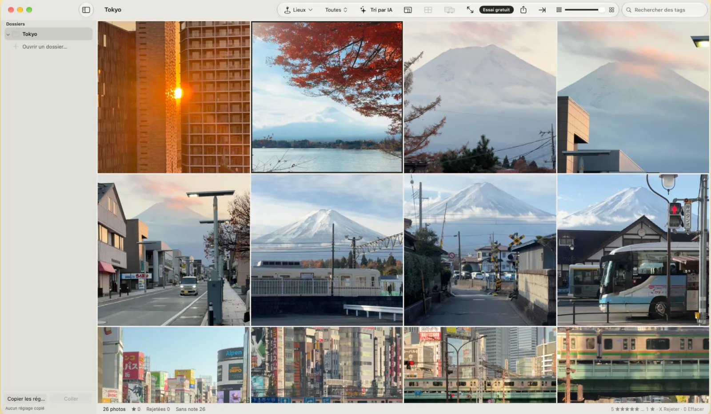

PAR DOSSIER
Butter Edit travaille directement sur vos dossiers. Rien n’est copié, rien n’est importé : ouvrez un dossier et commencez.

Ouvrir les dossiers là où ils sont
Cartes SD, SSD externes, n’importe quel dossier de votre ordinateur. Sur Mac, les changements faits dans le Finder apparaissent aussitôt.
Retouches en XMP à côté de chaque photo
Notes, rejets, étiquettes de couleur et mots-clés utilisent les champs XMP standard, lisibles par d’autres apps photo. Vos originaux ne sont jamais modifiés.
Des disques qui vont et viennent
Débranchez un disque : ses dossiers restent dans la barre latérale comme « non connectés ». Rebranchez-le et continuez, sans redémarrer.
Des vignettes qui voyagent avec le disque
Le cache de vignettes est placé dans un dossier masqué sur le même disque que les photos : la deuxième visite est instantanée, même sur un autre ordinateur. Taille et emplacement se règlent dans les Réglages.
Aperçus préparés à l’avance
Des aperçus à la taille de l’écran sont créés en arrière-plan pour tout le dossier, en commençant par la photo affichée, et se mettent en pause pendant que vous travaillez.
Tri rapide
1 à 5 étoiles, X pour rejeter, étiquettes de couleur avec 6–9, comparaison de 2 à 6 photos côte à côte, piles et filtres par note, étiquette, choix de l’IA ou tags.
Éditeur RAW rapide par dossier
Téléchargement gratuit, avec 30 jours d’essai gratuit de toutes les fonctions. Nécessite macOS 26 ou version ultérieure. Windows 10 (64 bits) ou version ultérieure.